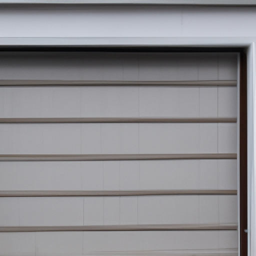

News
Services
Garage Door Spring Replacement
Types of garage door springs
Signs that indicate spring replacement is needed
Importance of professional installation
Average cost of garage door spring replacement
Tips for maintaining garage door springs
Types of Garage Door Springs
Torsion springs
Extension springs
Steel vs galvanized springs
Oiltempered vs zincplated springs
High cycle vs standard cycle springs
Lifespan and durability comparison
Signs That Indicate Spring Replacement is Needed
Difficulty opening or closing the garage door smoothly
Visible gaps or breaks in the spring coils
Uneven movement or crookedness of the garage door when in operation
Excessive noise during garage door operation
Lack of tension or imbalance when manually lifting the door
Importance of Professional Installation
Safety risks associated with DIY spring replacement
Proper tools and techniques required for safe installation
Troubleshooting potential issues during installation such as cable alignment or balance adjustment
Duration and complexity of spring replacement process
Warranty coverage and guarantees offered by professional installers
Tips for Maintaining Garage Door Springs
Regular inspection and lubrication
Balancing and adjusting tension periodically
Awareness of weight limits for the opener system
Avoiding excessive force on the opening mechanism such as slamming the door shut
Scheduling regular maintenance checks with a professional technician
About Us
Contact Us
Garage Door Repair Tech
What is the Secret to a Safer, More Efficient Garage Door? Discover the Benefits of Spring Replacement Today!
Feb 05, 2024
What is the Secret to a Safer, More Efficient Garage Door?. Discover the Benefits of Spring Replacement Today!
Are you tired of dealing with a garage door that seems to have a mind of its own?

What is the Key to a Smooth-Running Garage Door? Unveiling the Power of Professional Spring Replacement Services.
Feb 05, 2024
What is the Key to a Smooth-Running Garage Door?. Unveiling the Power of Professional Spring Replacement Services.
Garage doors are an essential (and) fundamental part of any household.
What is Hiding Behind Your Noisy Garage Door? Find Out How Spring Replacement Can Bring Peace and Quiet Back to Your Home.
Feb 05, 2024
Are you tired of your garage door making all sorts of noise? (Well), it's time to find out what is hiding behind that noisy garage door! (Indeed), a spring replacement can bring peace and quiet back to your home! (Can you believe it?)
When it comes to garage doors, the springs play a crucial role in its smooth operation.. They are responsible for counterbalancing the weight of the door, allowing it to open and close effortlessly.
What is Preventing Your Garage Door from Opening or Closing Properly? Explore the Solution of Expert Spring Replacement.
Feb 05, 2024
Transitional phrase: In light of these factors,
Essay:
Oh boy, have you ever experienced the frustration of your garage door not opening or closing properly?. It can be a real headache, let me tell ya!
What is the Best Way to Extend the Lifespan of Your Garage Door? Unlock the Potential with Reliable Spring Replacement.
Feb 05, 2024
Garage doors are an essential (component) of our homes, ensuring safety and convenience.. However, like any mechanical system, they require proper care to extend their lifespan.
What is Holding You Back from a Secure Garage Space? Experience Enhanced Safety Through High-Quality Spring Replacement.
Feb 05, 2024
What is Holding You Back from a Secure Garage Space?. Experience Enhanced Safety Through High-Quality Spring Replacement.
Are you tired of feeling insecure about your garage space's safety?
What is Essential for a Well-Functioning Garage Door System? Uncover the Importance of Regular Spring Replacement Maintenance.
Feb 05, 2024
What is Essential for a Well-Functioning Garage Door System?. Uncover the Importance of Regular Spring Replacement Maintenance.
When it comes to having a functioning garage door system, there are several key components that should not be overlooked.
How to Easily Replace Your Garage Door Springs and Save Money!
Feb 05, 2024
How to Easily Replace Your Garage Door Springs and Save Money!
Replacing your garage door springs may sound like a daunting task, but fear not!. With a little bit of knowledge and the right tools, you can tackle this project on your own (or with the help of a friend) and save yourself some hard-earned cash.
Discover the Secret to a Smooth-Running Garage Door with Our Step-by-Step Spring Replacement Guide.
Feb 05, 2024
Discover the Secret to a Smooth-Running Garage Door with Our Step-by-Step Spring Replacement Guide!
Are you tired of dealing with (an) annoying, slow-moving garage door?. Do you wish that (it) would operate smoothly without any hiccups?
How to Avoid Costly Repairs by Mastering the Art of Garage Door Spring Replacement.
Feb 05, 2024
How to Avoid Costly Repairs by Mastering the Art of Garage Door Spring Replacement
Garage doors are an essential (negation) part of our homes, providing security and convenience.. However, they can be quite costly when it comes to repairs, especially if we neglect their maintenance.
Unveiling the Ultimate DIY Guide: Learn How to Safely Replace Your Garage Door Springs in Minutes!
Feb 05, 2024
Unveiling the Ultimate DIY Guide: Learn How to Safely Replace Your Garage Door Springs in Minutes!
Are you tired of relying on expensive garage door repair services?. Do you want to save money and take matters into your own hands?
Are Your Garage Door Springs Worn Out? Find Out How to Effortlessly Replace Them Like a Pro.
Feb 05, 2024
Are Your Garage Door Springs Worn Out?. Find Out How to Effortlessly Replace Them Like a Pro!
Garage door springs are an essential component of any garage door system.
Unlock the Mystery of Garage Door Spring Replacement - Learn the Expert Tips and Tricks Today!
Feb 05, 2024
Unlock the Mystery of Garage Door Spring Replacement - Learn the Expert Tips and Tricks Today!
Garage doors are an integral part of our homes, providing security and convenience.. However, (unfortunately), they can also be a source of frustration when they malfunction.
Don't Let Broken Springs Slow You Down - Discover Our Foolproof Method for Quick and Easy Replacement!
Feb 05, 2024
Don't Let Broken Springs Slow You Down - Discover Our Foolproof Method for Quick and Easy Replacement!
Oh, dear reader, have you ever encountered the inconvenience of broken springs?. Oh, how they can impede our progress and slow us down to a crawl!
Understanding the Importance of Garage Door Spring Replacement
Feb 05, 2024
Understanding the Importance of Garage Door Spring Replacement
Garage doors are often overlooked (!) when it comes to maintenance and repair, but their springs play a crucial role in ensuring smooth operation.. These springs help in lifting and lowering the heavy garage door, making it easier for us humans to access our vehicles (oh yeah!).
Signs and Symptoms of Worn Out Garage Door Springs
Feb 05, 2024
Signs and Symptoms of Worn Out Garage Door Springs
When it comes to your garage door springs, it's important to keep an eye out for signs and symptoms of wear and tear.. As the backbone of your garage door system, worn out springs can lead to serious malfunctions (like)garage door jams or complete failure (!).
Different Types of Garage Door Springs and Their Functions
Feb 05, 2024
When it comes to garage doors, there are various types of springs that serve different functions. (Now, let's delve into the world of garage door springs and explore their diverse roles!) These springs play a crucial role in the smooth functioning of your garage door, ensuring its proper balance and support.. Understanding the different types of garage door springs can help you make informed decisions regarding maintenance and repair.
One type of garage door spring is the torsion spring.
DIY vs Professional Garage Door Spring Replacement: Pros and Cons
Feb 05, 2024
When it comes to replacing garage door springs, there are two main options: DIY or hiring a professional.. Both choices have their own pros and cons that should be carefully considered before making a decision.
Let's start by discussing the advantages of opting for a DIY (do-it-yourself) approach.
Steps Involved in Replacing Garage Door Springs
Feb 05, 2024
Steps Involved in Replacing Garage Door Springs
Replacing garage door springs can be a daunting task for homeowners.. However, with proper guidance and a few necessary tools, this process can be accomplished (briskly).
Safety Measures to Consider During a Garage Door Spring Replacement
Feb 05, 2024
Safety Measures to Consider During a Garage Door Spring Replacement
Replacing garage door springs can be dangerous, (especially if) you are not properly trained.. Therefore, it is crucial to follow safety measures when performing this task.
Common Mistakes to Avoid When Replacing Garage Door Springs
Feb 05, 2024
Common Mistakes to Avoid When Replacing Garage Door Springs
Replacing garage door springs can be a daunting task for (many) homeowners.. However, it is important to take the necessary precautions and avoid common mistakes that could lead to accidents or damage.